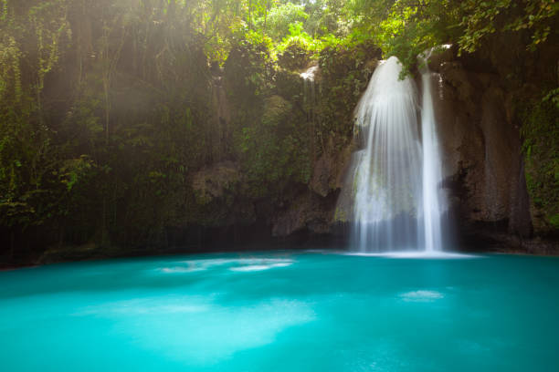

Locations
Discover where Cebu’s most stunning waterfalls are found. From Badian to Oslob, each destination offers a unique adventure and breathtaking scenery.

Kawasan Falls — Badian
A world-famous multi-tiered waterfall with crystal-clear turquoise pools. Perfect for swimming and canyoneering adventures.
View Details
Inambakan Falls — Ginatilan
A dramatic 100-foot waterfall with several tiers and natural pools below. A favorite for adventurers and photographers alike.
View Details
Tumalog Falls — Oslob
Known for its curtain-like cascade and misty atmosphere. An easy-access waterfall often visited after whale shark watching in Oslob.
View Details
Dao Falls — Samboan
A stunning and serene waterfall reached through a scenic jungle trek. Features a tall and narrow cascade surrounded by limestone walls.
View Details